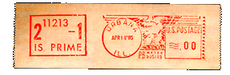

Mersenne Primes: History, Theorems and Lists
Contents:
- Early History
- Perfect Numbers and a Few Theorems
- Table of Known Mersenne Primes
- The Lucas-Lehmer Test and Recent History
- Conjectures and Unsolved Problems
- See also Where is the next larger Mersenne prime? and Mersenne heuristics
1. Early History
Many early writers felt that the numbers of the form 2n-1 were prime for all primes n, but in 1536 Hudalricus Regius showed that 211-1 = 2047 was not prime (it is 23.89). By 1603 Pietro Cataldi had correctly verified that 217-1 and 219-1 were both prime, but then incorrectly stated 2n-1 was also prime for 23, 29, 31 and 37. In 1640 Fermat showed Cataldi was wrong about 23 and 37; then Euler in 1738 showed Cataldi was also wrong about 29. Sometime later Euler showed Cataldi's assertion about 31 was correct.
Enter French monk Marin Mersenne (1588-1648). Mersenne stated in the preface to his Cogitata Physica-Mathematica (1644) that the numbers 2n-1 were prime for
n = 2, 3, 5, 7, 13, 17, 19, 31, 67, 127 and 257
and were composite for all other positive integers n < 257. Mersenne's (incorrect) conjecture fared only slightly better than Cataldi's, but still got his name attached to these numbers.
Definition: When 2n-1 is prime it is said to be a Mersenne prime.
It was obvious to Mersenne's peers that he could not have tested all of these numbers (in fact he admitted as much), but they could not test them either. It was not until over 100 years later, in 1750, that Euler verified the next number on Mersenne's and Regius' lists, 231-1, was prime. After another century, in 1876, Lucas verified 2127-1 was also prime. Seven years later Pervouchine showed 261-1 was prime, so Mersenne had missed this one. In the early 1900's Powers showed that Mersenne had also missed the primes 289-1 and 2107-1. Finally, by 1947 Mersenne's range, n < 258, had been completely checked and it was determined that the correct list is:
n = 2, 3, 5, 7, 13, 17, 19, 31, 61, 89, 107 and 127.
See the table of known Mersenne primes below.
2. Perfect Numbers and a Few Theorems
Many ancient cultures were concerned with the relationship of a number with the sum of its divisors, often giving mystic interpretations. Here we are concerned only with one such relationship:
Definition: A positive integer n is called a perfect number if it is equal to the sum of all of its positive divisors, excluding n itself.
For example, 6 is the first perfect number because 6=1+2+3. The next is 28=1+2+4+7+14. The next two are 496 and 8128. These four were all known before the time of Christ. Look at these numbers in the following partially factored form:
2.3, 4.7, 16.31, 64.127.
Do you notice they all have the same form 2n-1(2n-1) (for n = 2, 3, 5, and 7 respectively)? And that in each case 2n-1 was a Mersenne prime? In fact it is easy to show the following theorems:
Theorem One: k is an even perfect number if and only if it has the form 2n-1(2n-1) and 2n-1 is prime. [Proof.]
Theorem Two: If 2n-1 is prime, then so is n. [Proof.]
So the search for Mersennes is also the search for even perfect numbers!
You may have also noticed that the perfect numbers listed above (6, 28, 496, 8128) all end with either the digit 6 or the digit 8--this is also very easy to prove (but no, they do not continue to alternate 6, 8, 6, 8,...). If you like that digit pattern, look at the first four perfect numbers in binary:
110
11100
111110000
1111111000000
(The binary digit pattern is a consequence of Theorem One.) It is not known whether or not there is an odd perfect number, but if there is one it is big! This is probably the oldest unsolved problem in all of mathematics.
When checking to see if a Mersenne number is prime, we usually first look for any small divisors. The following theorem of Euler and Fermat is very useful in this regard.
Theorem Three: Let p and q be odd primes. If q divides Mp = 2p-1, thenq = +/-1 (mod 8) and q = 2kp + 1
for some integer k [Proof]. Finally, we offer the following for your perusal:
Theorem Four: Let p = 3 (mod 4) be prime. 2p+1 is also prime if and only if 2p+1 divides Mp. [Proof].
Theorem Five: If you sum the digits of any even perfect number (except 6), then sum the digits of the resulting number, and repeat this process until you get a single digit, that digit will be one. [Proof.]
3. Table of Known Mersenne Primes
Let M(p) = 2p-1 and P(p) = 2p-1(2p-1). The list of all known primes p for which M(p) is a Mersenne prime (therefore P(p) is a perfect number) follows:
| ## | p (exponent) |
digits in Mp |
digits in Pp |
year | discoverer | notes |
|---|---|---|---|---|---|---|
| 1 | 2 | 1 | 1 | ---- | ---- | |
| 2 | 3 | 1 | 2 | ---- | ---- | |
| 3 | 5 | 2 | 3 | ---- | ---- | |
| 4 | 7 | 3 | 4 | ---- | ---- | |
| 5 | 13 | 4 | 8 | 1456 | anonymous | |
| 6 | 17 | 6 | 10 | 1588 | Cataldi | |
| 7 | 19 | 6 | 12 | 1588 | Cataldi | |
| 8 | 31 | 10 | 19 | 1772 | Euler | |
| 9 | 61 | 19 | 37 | 1883 | Pervushin | |
| 10 | 89 | 27 | 54 | 1911 | Powers | |
| 11 | 107 | 33 | 65 | 1914 | Powers | note |
| 12 | 127 | 39 | 77 | 1876 | Lucas | |
| 13 | 521 | 157 | 314 | 1952 | Robinson | |
| 14 | 607 | 183 | 366 | 1952 | Robinson | |
| 15 | 1279 | 386 | 770 | 1952 | Robinson | |
| 16 | 2203 | 664 | 1327 | 1952 | Robinson | |
| 17 | 2281 | 687 | 1373 | 1952 | Robinson | |
| 18 | 3217 | 969 | 1937 | 1957 | Riesel | |
| 19 | 4253 | 1281 | 2561 | 1961 | Hurwitz | |
| 20 | 4423 | 1332 | 2663 | 1961 | Hurwitz | |
| 21 | 9689 | 2917 | 5834 | 1963 | Gillies | |
| 22 | 9941 | 2993 | 5985 | 1963 | Gillies | |
| 23 | 11213 | 3376 | 6751 | 1963 | Gillies | |
| 24 | 19937 | 6002 | 12003 | 1971 | Tuckerman | [Tuckerman71] |
| 25 | 21701 | 6533 | 13066 | 1978 | Noll & Nickel | [NN80] |
| 26 | 23209 | 6987 | 13973 | 1979 | Noll | " |
| 27 | 44497 | 13395 | 26790 | 1979 | Nelson & Slowinski | [Slowinski79] |
| 28 | 86243 | 25962 | 51924 | 1982 | Slowinski | [Ewing83] |
| 29 | 110503 | 33265 | 66530 | 1988 | Colquitt & Welsh | [CW91] |
| 30 | 132049 | 39751 | 79502 | 1983 | Slowinski | |
| 31 | 216091 | 65050 | 130100 | 1985 | Slowinski | |
| 32 | 756839 | 227832 | 455663 | 1992 | Slowinski & Gage et al. | (web page) |
| 33 | 859433 | 258716 | 517430 | 1994 | Slowinski & Gage | |
| 34 | 1257787 | 378632 | 757263 | 1996 | Slowinski & Gage | (web page) |
| 35 | 1398269 | 420921 | 841842 | 1996 | Armengaud, Woltman, et al. (GIMPS) |
(web page) |
| 36 | 2976221 | 895932 | 1791864 | 1997 | Spence, Woltman, et al. (GIMPS) |
(web page) |
| 37 | 3021377 | 909526 | 1819050 | 1998 | Clarkson, Woltman, Kurowski et al. (GIMPS, PrimeNet) |
(web page) |
| 38 | 6972593 | 2098960 | 4197919 | 1999 | Hajratwala,
Woltman, Kurowski et al. (GIMPS, PrimeNet) |
(web page) |
| 39 | 13466917 | 4053946 | 8107892 | 2001 | Cameron, Woltman,
Kurowski et al. (GIMPS, PrimeNet) |
(web page) |
| 40 | 20996011 | 6320430 | 12640858 | 2003 | Shafer,
Woltman, Kurowski et al. (GIMPS, PrimeNet) |
(web page) |
| 41 | 24036583 |
7235733 |
14471465 |
2004 | Findley,
Woltman, Kurowski et al. (GIMPS, PrimeNet) |
(web page) |
| 42 | 25964951 |
7816230 |
15632458 |
2005 | Nowak,
Woltman, Kurowski et al. (GIMPS, PrimeNet) |
(web page) |
| 43 | 30402457 |
9152052 |
18304103 |
2005 | Cooper, Boone,
Woltman,
Kurowski et al. (GIMPS, PrimeNet) |
(web page) |
| 44 | 32582657 | 9808358 | 19616714 | 2006 | Cooper, Boone,
Woltman, Kurowski et al. (GIMPS, PrimeNet) |
(web page) |
| 45 | 37156667 | 11185272 | 22370543 | 2008 | Elvenich, Woltman, Kurowski et al. (GIMPS, PrimeNet) |
(web page) |
| 46 | 42643801 | 12837064 | 25674127 | 2009 | Strindmo, Woltman, Kurowski et al. (GIMPS, PrimeNet) |
(web page) |
| 47 | 43112609 | 12978189 | 25956377 | 2008 | Smith, Woltman, Kurowski et al. (GIMPS, PrimeNet) |
(web page) |
| 48 | 57885161 | 17425170 | 34850339 | 2013 | Cooper, Woltman, Kurowski et al. (GIMPS, PrimeNet) |
(web page) |
| 49? | 74207281 | 22338618 | 44677235 | 2016 | Cooper, Woltman (prime95), Kurowski & Blosser (PrimeNet), GIMPS et al. | (web page) |
| 50? | 77232917 | 23249425 | 46498850 | 2017 | Pace, Woltman (prime95), Kurowski & Blosser (PrimeNet), GIMPS et al. | (web page) |
| 51? | 82589933 | 24862048 | 49724095 | 2018 | Laroche, Woltman (prime95), Blosser (PrimeNet), GIMPS et al. | (web page) |
| 52? | 136279841 | 41024320 | 82048640 | 2024 | Durant, Preda, Woltman, Blosser, et al. | (web page) |
We put question marks instead of a number for the last of the Mersenne primes because it will not be known if there are other Mersenne's in between these until a check and double check has been completed by GIMPS. See the GIMPS Status Page for more information. Not all smaller exponents have been tested.
4. The Lucas-Lehmer Test and Recent History
Mersenne primes (and therefore even perfect numbers) are found using the following theorem:
Lucas-Lehmer Test: For p an odd prime, the Mersenne number 2p-1 is prime if and only if 2p-1 divides S(p-1) where S(n+1) = S(n)2-2, and S(1) = 4. [Proof.]
(It is also possible to start with S(1)=10 and certain other values depending on p.) In pseudo-code this test is:
Lucas_Lehmer_Test(p): s := 4; for i from 3 to p do s := s2-2 mod 2p-1; if s == 0 then 2p-1 is prime else 2p-1 is composite;
The theory for this test was initiated by Lucas in the late 1870's and then made into this simple test about 1930 by Lehmer. The sequence S(n) is computed modulo 2p-1 to save time. This test is ideal for binary computers because the division by 2p-1 (in binary) can be done using rotation and addition only. (See the pages on proving primality for more information of proving numbers are prime.)
In 1811 Peter Barlow wrote in his text Theory of Numbers that 230(231-1) "is the greatest [perfect number] that will be discovered; for as they are merely curious, without being useful, it is not likely that any person will attempt to find one beyond it." I wonder what he would have made of the first attempts to climb Mount Everest, to run faster miles, or to jump a longer broad jump--other tasks that are curious but not useful. Obviously no one in the late 1800's had any idea of the power of modern computers. What might we know about the machines of 50 years from now? (See also "Why find big primes?")
 After the 23rd Mersenne prime was found at the University of Illinois, the mathematics department was so proud that the chair of their department, Dr. Bateman, had their postage meter changed to stamp "211213-1 is prime" on each envelope. This was used until the four color theorem was proved in 1976. (In 1985 Dr. Bateman printed several copies of the earlier imprint--the image on the left is from one of these.)
The 25th and 26th Mersenne primes were found by high-school students Laura Nickel and Landon Curt Noll, who, though they had little understanding of the mathematics involved, used Lucas' simple test on the local university's mainframe (CSUH's CDC 174) to find the next two primes. Their discovery of the first prime made the national television news and the front page of the New York times. They went their separate ways after finding the first prime, but Noll kept the program running to find the second--so Noll claims complete ownership. Noll searched later, and though he never found another Mersenne prime, he is one of a team that holds the record for the largest non-Mersenne prime. He currently works for Silicon Graphics.
Slowinski, who works for Cray computers, has written a version of the Lucas test that he has convinced many Cray labs around the world to run in their spare time (time that would be lost otherwise). He had to delay announcing one of his prime records until he got permission to begin looking for it. Slowinski's search for record primes is "not so organized as you would suppose" (his words), as he does not search systematically. In fact, looking at the table of Mersennes you see he missed the 29th prime but found the 30th and 31st. Colquitt & Welsh worked to fill in the gaps and found the 29th.
Enter George Woltman, an excellent programmer and organizer. Starting in late 1995 he gathered up the disparate databases and combined them into one. Then he placed this database, and a free, highly optimized program for search for Mersennes onto the web. This began GIMPS (the Great Internet Mersenne Prime Search) which: has now found the largest known Mersennes, has scanned all of the regions left unexplored between the previous record primes, combines the efforts of dozens of experts and thousands of amateurs, and which offers free software for most computer platforms.
In late 1997 Scott Kurowski (and others) established PrimeNet to automate the selection of ranges and reporting of results for GIMPS, now almost anyone can join this search!
5. Conjectures and Unsolved Problems
- Is there an odd perfect number?
- We know that all even perfect numbers are a Mersenne prime times a power of two (Theorem One above), but what about odd perfect numbers? If there is one, then it is a perfect square times an odd power of a single prime; it is divisible by at least eight primes and has at least 75 prime factors (not necessarily distinct [Hare2006], [Hare2005], [IS2003]) with at least 9 distinct [Nielsen2006]; it has at least 300 decimal digits [BCR91]; and it has a prime divisor greater that 1020 [Cohen87]. For more information see [Ribenboim95] or [Guy94].
- Are there infinitely many Mersenne primes?
- Equivalently we could ask: Are there infinitely many even perfect numbers?
The answer is probably yes (because the harmonic series diverges).
- Are there infinitely many Mersenne composites?
- Euler showed:
Theorem: If k>1 and p=4k+3 is prime, then 2p+1 is prime if and only if 2p = 1 (mod 2p+1).
So if p=4k+3 and 2p+1 are prime then the Mersenne number 2p-1 is composite (and it seems reasonable to conjecture that there are infinitely many primes pairs such p, 2p+1).
- The New Mersenne Conjecture:
- Bateman, Selfridge and Wagstaff have conjectured [BSW89] the following.
Let p be any odd natural number. If two of the following conditions hold, then so does the third:
Notice how this conjecture is related to the theorem in the previous conjecture. See our page on The New Mersenne Conjecture for status information.- p = 2k+/-1 or p = 4k+/-3
- 2p-1 is a prime (obviously a Mersenne prime)
- (2p+1)/3 is a prime.
- Is every Mersenne number 2p-1 square free?
- This falls more in the category of an open question (to which we do not
know the answer), rather than a conjecture (which we guess is true) [Guy94 section A3]. It is easy
to show that if the square of a prime p divides a Mersenne, then p is a Wieferich
prime and these are rare! Only two are known below 4,000,000,000,000
and neither of these squared divide a Mersenne.
- Let C0 = 2, then let C1 = 2C0-1, C2 = 2C1-1, C3 = 2C2-1, ... Are these all prime?
- According to Dickson [Dickson v1p22] Catalan
responded in 1876 to Lucas' stating 2127-1 (C4)
is prime with this sequence. These numbers grow very quickly:
It seems very unlikely that C5 (or many of the larger terms) would be prime, so this is no doubt another example of Guy's strong law of small numbers. Notice that if there is even one composite term in this sequences, then by theorem one all of the following terms are composite. (Landon Curt Noll tells me he has used his program calc to verify that C5 has no prime divisors below 5*1051.)C0 = 2 (prime) C1 = 3 (prime) C2 = 7 (prime) C3 = 127 (prime) C4 = 170141183460469231731687303715884105727 (prime) C5 > 1051217599719369681875006054625051616349 (is C5 prime ?)
- Are there more double-Mersenne primes?
- Another common early misconception was that if n=Mp is prime, then so
is Mn; lets call this number MMp (a "double-Mersenne"). Indeed each
of the first four such numbers are
prime:
MM2 = 23-1 = 7,
However, the next four (MM13 MM17 MM19 and MM31) all have known factors--so are composite. Are there any more primes in this sequence? Probably not, but it remains an open question. Tony Forbes is leading a project to search for a factor of the next term: MM61, you might want to join and help!
MM3 = 27-1 = 127,
MM5 = 231-1 = 2147483647,
MM7 = 2127-1 = 170141183460469231731687303715884105727.Notice the Catalan sequence above is a subsequence of this one.